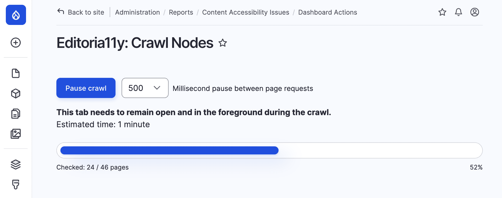
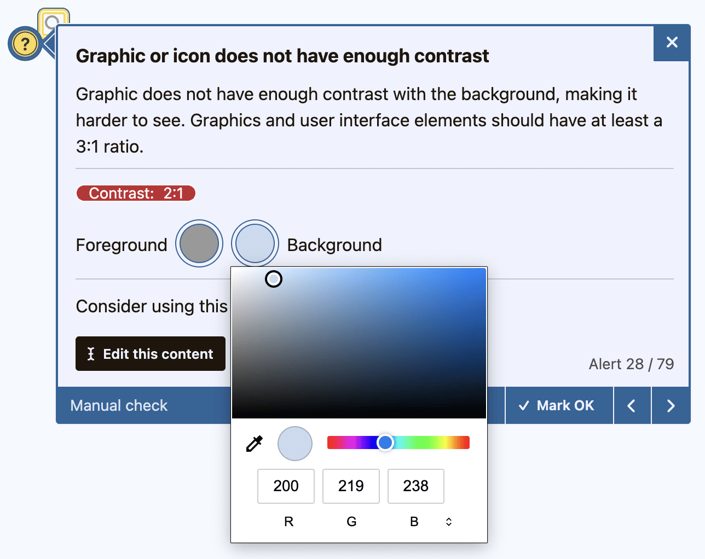

<main class="container col-lg-12 mx-auto py-5">
    <div class="row docs">
      <div class="col-12 col-md-5 col-lg-4 mb-5">
        <div id="on-this-page" class="list-group ms-2 ms-lg-5 position-sticky top-0 pt-3">
        </div>
      </div>
      <div class="col-12 col-md-7 col-lg-8 pt-3" data-bs-spy="scroll" data-bs-target="#on-this-page"
        data-bs-smooth-scroll="true" tabindex="0">
        <section id="features">
          <h1 class="text-body-emphasis pt-2 pb-5" data-i18n-id="s-3943">Funzionalità</h1>
          <p class="fs-6" data-i18n-id="s-b729">I test principali di Editoria11y rilevano più di 50 problemi comuni di accessibilità nei
            contenuti: scelte che compromettono la leggibilità, errori che rendono meno efficaci i lettori di schermo e
            imprecisioni che penalizzano la SEO.</p>
          <p class="fs-6" data-i18n-id="s-0c4a">I componenti aggiuntivi offrono circa 40 test supplementari per sviluppatori e designer, test
            personalizzati e vari strumenti di controllo qualità a livello di sito.</p>
          <p class="fs-6" data-i18n-id="s-0887">I test sui contenuti si concentrano sui problemi che emergono <strong>dopo</strong> che i siti
            vengono consegnati agli autori. Prima del lancio è necessario testare i siti con strumenti di verifica
            manuali, tastiere e lettori di schermo; tuttavia anche il sito più accessibile tende a deteriorarsi nel
            tempo, man mano che le modifiche introducono nuovi problemi.</p>
          <p class="fs-6" data-i18n-id="s-44f1" data-og="description">Ciò che distingue Editoria11y dagli altri strumenti di accessibilità è che i suoi test vengono
            eseguiti in tempo reale, nel browser, mentre gli autori modificano e visualizzano in anteprima il loro
            lavoro. <strong>Gli autori reagiscono più facilmente a un feedback immediato e contestuale</strong>, notano
            gli avvisi e apportano correzioni, invece di dover ricordare di visitare una dashboard o avviare un
            controllo manuale.</p>
        </section>
        <section id="authoring">
          <h2 data-i18n-id="s-fec2">L'esperienza dell'autore</h2>
          <div class="clearfix">
            
            <p data-i18n-id="s-ca49">Gli autori vedono la barra degli strumenti di Editoria11y mentre modificano i contenuti. Quando vengono
              rilevati problemi, la barra diventa gialla o rossa e mostra il numero di segnalazioni. Facendo clic sul
              contatore si scorre fino al primo avviso e si apre il relativo tooltip.</p>
          </div>
          <div class="row">
            
            <p class="col-6 col-lg-4 align-content-center" data-i18n-id="s-6a38">I suggerimenti appaiono in linea con il contenuto e
              comprendono una descrizione in linguaggio semplice dell'errore, indicazioni per correggerlo e note sul
              perché il problema è rilevante.</p>
          </div>
          <div class="row">
            
            <p class="col-6 col-lg-4 align-content-center" data-i18n-id="s-f5e0">La barra degli strumenti include funzioni aggiuntive per i
              controlli manuali, tra cui visualizzatori della struttura dei titoli, del testo alternativo e un punteggio
              di leggibilità.</p>
          </div>
        </section>
        <section id="admins">
          <h2 data-i18n-id="s-c5cb">Controlli per gli amministratori del sito</h2>
          <p data-i18n-id="s-c155">Ogni aspetto visibile dello strumento di verifica può essere personalizzato. Parametri ed eventi consentono
            di rimuovere test, riscrivere i suggerimenti, inserire test personalizzati e impostare temi grafici su
            misura.</p>
          <p data-i18n-id="s-e2f8">I plugin per Drupal e WordPress aggiungono ulteriori funzionalità, come la gestione sincronizzata delle
            segnalazioni ignorate, dashboard a livello di sito ed esportazione di report in CSV.</p>
          <figure class="figure my-4 rounded shadow mb-5 border">
            
            <figcaption class="figure-caption p-3 pt-2" data-i18n-id="s-f804">La dashboard di Drupal, che include elenchi filtrabili di
              problemi, pagine con problemi e segnalazioni ignorate.</figcaption>
          </figure>
        </section>
        <section id="tests">
          <h2 data-section="tests" data-i18n-id="s-7aa7">Test</h2>
          <p class="fs-6" data-i18n-id="s-4c74">I test di Editoria11y mirano a migliorare l'esperienza del Web per tutti gli utenti, misurata
            in termini umani e non solo in base agli standard tecnici. Alcuni test chiave sono pensati per aiutare a
            conseguire le Web Content Accessibility Guidelines (<a href="https://www.w3.org/WAI/WCAG22/quickref/">WCAG
              2.2 AA</a>), altri sono influenzati dal lavoro del <a href="https://www.w3.org/TR/coga-usable/">Cognitive
              and Learning Disabilities Accessibility Task Force</a>, nonché dalle buone pratiche generali di usabilità
            e design.</p>
          <p class="fs-6 pb-3" data-i18n-id="s-acaf">I singoli test possono essere disattivati dagli amministratori del sito.</p>
          <div class="row listgrid">
            <div class="col-12 col-xl-4">
              <h3 class="fs-5 nomenu pt-0" data-i18n-id="s-d4f0">Testo alternativo delle immagini</h3>
              <ul>
                <li data-i18n-id="s-91d8">Immagine priva dell'attributo alt</li>
                <li data-i18n-id="s-82dc">Il testo alternativo è un nome di file</li>
                <li data-i18n-id="s-b384">Il testo alternativo è un segnaposto ("TBD")</li>
                <li data-i18n-id="s-e9d8">Il testo alternativo contiene simboli non pronunciabili</li>
                <li data-i18n-id="s-a464">Il testo alternativo contiene parole ridondanti ("immagine di&hellip;")</li>
                <li data-i18n-id="s-d390">Il testo alternativo è troppo lungo</li>
                <li data-i18n-id="s-98b4">L'immagine decorativa potrebbe avere valore informativo</li>
                <li data-i18n-id="s-b3f7">Immagine del carosello contrassegnata come decorativa</li>
                <li data-i18n-id="s-046e">Immagine con didascalia priva di testo alternativo</li>
                <li data-i18n-id="s-27e8">Il testo alternativo duplica la didascalia</li>
              </ul>
              <h3 class="fs-5 nomenu pt-0" data-i18n-id="s-7416">Immagini collegate</h3>
              <ul>
                <li data-i18n-id="s-4344">L'immagine collegata è priva di testo alternativo</li>
                <li data-i18n-id="s-a829">Il testo alternativo dell'immagine collegata è un URL o un nome di file</li>
                <li data-i18n-id="s-7a28">Il testo alternativo dell'immagine collegata è un segnaposto</li>
                <li data-i18n-id="s-545b">Il testo alternativo dell'immagine collegata contiene simboli non pronunciabili</li>
                <li data-i18n-id="s-f97b">Il testo alternativo dell'immagine collegata descrive l'immagine, non il collegamento</li>
                <li data-i18n-id="s-331e">Il testo alternativo dell'immagine collegata contiene parole ridondanti</li>
                <li data-i18n-id="s-4ee3">Il testo alternativo dell'immagine collegata è troppo lungo</li>
                <li data-i18n-id="s-114e">Un'immagine in un collegamento con testo non ha l'attributo alt</li>
              </ul>
              <h3 class="fs-5 nomenu pt-0" data-i18n-id="s-b0ee">Media incorporati</h3>
              <ul>
                <li data-i18n-id="s-561c">Il video richiede sottotitoli</li>
                <li data-i18n-id="s-e31b">L'audio richiede una trascrizione</li>
                <li data-i18n-id="s-edcb">La visualizzazione dati richiede un'alternativa accessibile</li>
                <li data-i18n-id="s-28a4">Il frame è privo di titolo</li>
                <li data-i18n-id="s-bf38">Il frame è escluso dalla navigazione da tastiera</li>
                <li data-i18n-id="s-10cc">Il contenuto del frame richiede una verifica manuale dell'accessibilità</li>
                <li data-i18n-id="s-4cec">Il documento collegato potrebbe non essere accessibile ai lettori di schermo</li>
                <li data-i18n-id="s-a85e">Il PDF è privo di un'alternativa accessibile</li>
                <li data-i18n-id="s-4b56">Componenti di layout interattivi nidificati</li>
              </ul>
            </div>
            <div class="col-12 col-xl-4">
              <h3 class="fs-5 nomenu pt-0" data-i18n-id="s-8c93">Collegamenti significativi</h3>
              <ul>
                <li data-i18n-id="s-0ade">Collegamento vuoto</li>
                <li data-i18n-id="s-4427">Il testo del collegamento è un URL</li>
                <li data-i18n-id="s-3520">Il testo del collegamento è solo un numero DOI</li>
                <li data-i18n-id="s-d515">Il testo del collegamento dice "clicca qui"</li>
                <li data-i18n-id="s-65bb">Il testo del collegamento contiene solo parole generiche ("leggi di più")</li>
                <li data-i18n-id="s-dd2d">Collegamenti diversi condividono lo stesso testo</li>
                <li data-i18n-id="s-0d39">Icona o immagine collegata priva di alternativa testuale</li>
                <li data-i18n-id="s-5a53">Il collegamento apre una nuova scheda senza avviso</li>
                <li data-i18n-id="s-cf05">Il collegamento punta a un file senza avviso</li>
                <li data-i18n-id="s-cb51">Il testo del collegamento contiene solo simboli o emoji</li>
                <li data-i18n-id="s-99ab">Testo del collegamento significativo nascosto agli utenti vedenti</li>
                <li data-i18n-id="s-06c2">Tooltip del collegamento ridondante</li>
                <li data-i18n-id="s-05ce">Collegamento ad ancora interna non funzionante</li>
                <li data-i18n-id="s-d4d1">Attributo ID duplicato</li>
                <li data-i18n-id="s-98a1">Il collegamento potrebbe puntare a un ambiente di sviluppo</li>
              </ul>
              <h3 class="fs-5 nomenu pt-0" data-i18n-id="s-80ff">Titoli</h3>
              <ul>
                <li data-i18n-id="s-6d85">La pagina è priva di un Titolo 1</li>
                <li data-i18n-id="s-fcfb">Il primo titolo è un sottotitolo</li>
                <li data-i18n-id="s-0ec0">Il titolo salta un livello</li>
                <li data-i18n-id="s-8e95">Il titolo è vuoto</li>
                <li data-i18n-id="s-0e78">L'immagine usata come titolo richiede un testo alternativo</li>
                <li data-i18n-id="s-9685">Il titolo è molto lungo</li>
                <li data-i18n-id="s-d7a5">Un paragrafo in grassetto potrebbe essere un titolo</li>
                <li data-i18n-id="s-7f66">Una citazione breve potrebbe essere un titolo</li>
              </ul>
              <h3 class="fs-5 nomenu pt-0" data-i18n-id="s-1fca">Leggibilità del testo</h3>
              <ul>
                <li data-i18n-id="s-42f3">Uso eccessivo di testo in maiuscolo</li>
                <li data-i18n-id="s-a546">Ampio blocco di testo in grassetto o corsivo</li>
                <li data-i18n-id="s-2896">Il testo è troppo piccolo</li>
                <li data-i18n-id="s-8c2e">Testo non collegato sottolineato</li>
                <li data-i18n-id="s-b9bd">Testo giustificato</li>
                <li data-i18n-id="s-4d3b">Pedice o apice usato impropriamente come formattazione</li>
                <li data-i18n-id="s-9809">Elenco finto realizzato con caratteri o simboli</li>
                <li data-i18n-id="s-efec">Elemento di elenco al di fuori di un elenco</li>
              </ul>

            </div>
            <div class="col-12 col-xl-4">
              <h3 class="fs-5 nomenu pt-0" data-i18n-id="s-aaa0">Contrasto dei colori</h3>
              <ul>
                <li data-i18n-id="s-fbfd">Il testo ha un contrasto insufficiente</li>
                <li data-i18n-id="s-1dba">Il contrasto del testo richiede un controllo manuale</li>
                <li data-i18n-id="s-3076">L'icona o il grafico ha un contrasto insufficiente</li>
                <li data-i18n-id="s-0e1d">Il contrasto dell'icona o del grafico richiede un controllo manuale</li>
                <li data-i18n-id="s-2f82">Il testo del campo di inserimento ha un contrasto insufficiente</li>
                <li data-i18n-id="s-0936">Il testo segnaposto ha un contrasto insufficiente</li>
              </ul>
              <h3 class="fs-5 nomenu pt-0" data-i18n-id="s-f99a">Tabelle</h3>
              <ul>
                <li data-i18n-id="s-00d1">La tabella è priva di una riga o colonna di intestazione</li>
                <li data-i18n-id="s-82fd">La cella di intestazione della tabella è vuota</li>
                <li data-i18n-id="s-c8f0">Un titolo di contenuto è usato all'interno di una tabella</li>
              </ul>
              <h3 class="fs-5 nomenu pt-0" data-i18n-id="s-fa30">Moduli ed elementi interattivi</h3>
              <ul>
                <li data-i18n-id="s-021d">Il pulsante è privo di etichetta accessibile</li>
                <li data-i18n-id="s-7bb8">Il pulsante ha un'etichetta ARIA non valida</li>
                <li data-i18n-id="s-308a">L'etichetta del pulsante include la parola "pulsante"</li>
                <li data-i18n-id="s-0e58">L'etichetta visibile non corrisponde al nome accessibile</li>
                <li data-i18n-id="s-91b6">Il campo di input non ha un'etichetta associata</li>
                <li data-i18n-id="s-6b9e">Il campo di input usa solo un'etichetta invisibile</li>
                <li data-i18n-id="s-beae">Il campo di input usa solo un segnaposto come etichetta</li>
                <li data-i18n-id="s-f49d">Il pulsante di reset potrebbe causare la perdita accidentale di dati</li>
                <li data-i18n-id="s-b69f">Elemento nascosto ai lettori di schermo ma ancora raggiungibile con la tastiera</li>
                <li data-i18n-id="s-7ef1">Un tabindex positivo interrompe l'ordine di lettura e navigazione</li>
              </ul>
              <h3 class="fs-5 nomenu pt-0" data-i18n-id="s-b6e6">Metadati della pagina</h3>
              <ul>
                <li data-i18n-id="s-1824">Titolo della pagina mancante</li>
                <li data-i18n-id="s-0c64">Lingua della pagina non dichiarata</li>
                <li data-i18n-id="s-bba1">Il viewport impedisce il ridimensionamento del testo</li>
                <li data-i18n-id="s-ccce">La pagina si aggiorna automaticamente</li>
              </ul>
            </div>
          </div>
        </section>
        <section class="row mb-5 pb-5" id="csa">
          <h2 class="pt-3" data-section="csa" data-i18n-id="s-d6f4">Funzionalità CSA</h2>

          <p class="fs-5" data-i18n-id="s-cb40">
            Editoria11y promuove l'accessibilità in modo unico. I suoi strumenti sono altamente efficaci nell'aiutare
            autori non tecnici a preparare contenuti che possano essere fruiti equamente da utenti Web con disabilità.
            Consideriamo questo un bene comune, quindi <strong>Editoria11y sarà sempre gratuito da usare</strong>.
          </p>
          <p class="fs-5" data-i18n-id="s-b419">
            Editoria11y non è però gratuito da sviluppare o supportare.
          </p>
          <p class="fs-5" data-i18n-id="s-7d6d">
            Il CSA colma questa lacuna: i membri del progetto finanziano lo sviluppo della libreria Editoria11y, dei suoi plugin CMS e della suite CSA: un insieme in rapida crescita di strumenti open source per il controllo qualità che offrono funzionalità simili ai prodotti proprietari, a un costo molto inferiore.
          </p>
          <figure class="figure my-4 shadow border rounded p-0 m-2 col-sm-12 col-xl-11">
            
            <figcaption class="figure-caption p-2 pt-2" data-i18n-id="s-8a9c">Il crawler CSA aggiorna una dashboard.</figcaption>
          </figure>

        </section>
        <section id="csa-tools" class="pb-5 mt-5 row g-5">

          <div class="mt-2">
            <h3 class="pt-3" data-section="csa-tools" data-i18n-id="s-a391">Test e strumenti</h3>
            <ul class="fs-5">
              <li data-i18n-id="s-fd2b">
                Test per sviluppatori, leggibilità e contrasto.
              </li>
              <li data-i18n-id="s-c3ea">
                Configurazione separata per ruolo, per sviluppatori e creatori di contenuti.
              </li>
              <li data-i18n-id="s-63c7">
                Strumenti per la creazione di test personalizzati.
              </li>
              <li data-i18n-id="s-3a31">
                Esclusioni a livello di sito con un clic
              </li>
              <li data-i18n-id="s-1664">
                Strumenti di manutenzione della dashboard e crawler
              </li>
            </ul>
            
          </div>

        </section>
        <section id="benefits" class="pb-5 mt-5 row g-5">


          <div class="">
            <h3 class="pt-0" data-section="benefits" data-i18n-id="s-9274">Vantaggi per la comunità</h3>
            <ul class="fs-5">
              <li data-i18n-id="s-fa04">Supporto prioritario.</li>
              <li data-i18n-id="s-b33f">Influenza ponderata sulla roadmap del progetto.</li>
              <li data-i18n-id="s-6864">Accesso automatico alle nuove funzionalità in roadmap.</li>
              <li data-i18n-id="s-cc94">Assistenza diretta alla configurazione (a seconda del livello).</li>
              <li data-i18n-id="s-42a4"><a href="https://form.jotform.com/260627656020150">Riconoscimento pubblico come sostenitore</a> (a
                seconda del livello/su richiesta; si applicano i termini).</li>
            </ul>
          </div>

          <div>
            <h3 class="nomenu" data-i18n-id="s-8335">Licenza a contributo libero</h3>
            <p class="fs-5" data-i18n-id="s-e62a">Al termine della fase Beta, la suite CSA sarà resa disponibile con un modello a contributo
              libero. Il nucleo di Editoria11y, sia la libreria che i plugin, rimarrà gratuito.</p>
            <p class data-i18n-id="s-eebc"><a class="btn btn-primary" href="/en/license/">Visualizza le opzioni di licenza e le
                alternative</a></p>

          </div>

        </section>

      </div>


    </div>
  </main>
